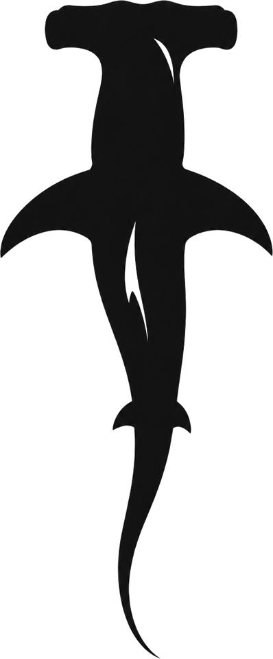
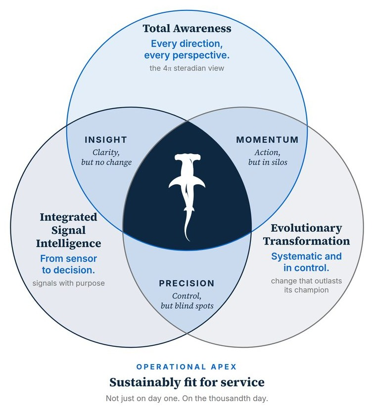
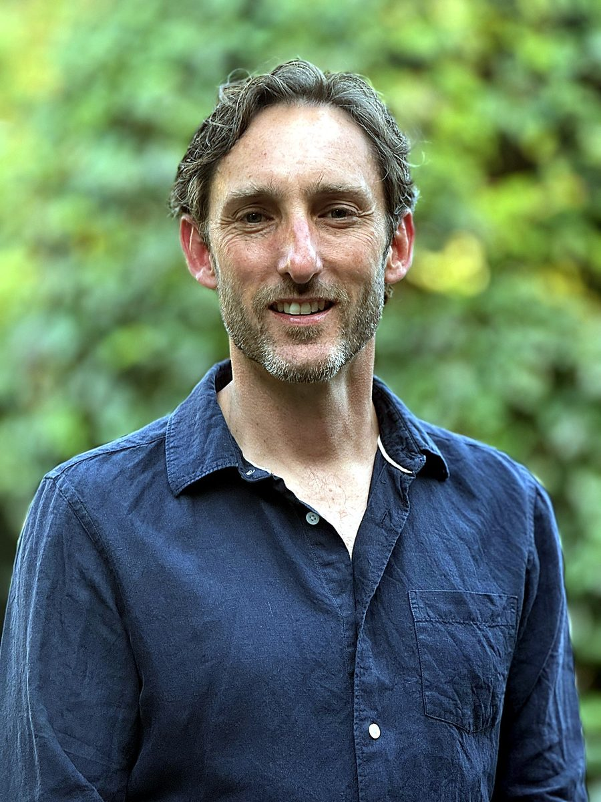
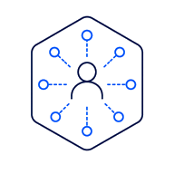
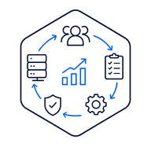
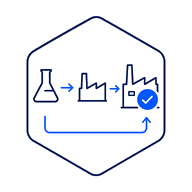

Become the apex operator - and sustain it.
An independent authority on the safe adoption of inspection, maintenance and surveillance robotics - and the OT infrastructure beneath them - in heavy industry.

- CEng · FInstMCChartered Engineer and Fellow of the Institute of Measurement & Control
- ~25 yearsacross operators and technology providers
- ~60 primary assetsin 8 operating basins - technology and strategy leadership at BP
- Standards workBSI Technical Committee CPI/30/5; sole author of one of SPRINT Robotics' guidelines
- Board directorTreasurer & Board Director, SPRINT Robotics

Three elements. One apex.
Total Awareness
A full 4π-steradian view: across people, process, technology, risk and operations - and in every direction. Because the failure is always in the direction nobody looked.
Integrated Signal Intelligence
The right sensors give the right signals. Joined end to end, from the sensor on the plant to the person making the decision, they become intelligence.
Evolutionary Transformation
The difference between success at a point in time and success that lasts. Transformational in what it changes, evolutionary in how it gets there.
Operational Apex
Not just on day one. On the thousandth day. The operation sees the whole system, understands what it is saying and acts on it in a way that is systematic, controlled and built to last.
Services
Assurance and planning that carry a system - and the OT it joins - from pilot to an asset that is sustainably fit for service.
Assessment of the technology, its OT and cyber-security integration, the claims and the deployment reality, by someone with nothing to sell.
Advocating a framework that qualifies the people, certifies the equipment and assures the process - for robotics and OT alike - for sustainable performance.
An independent voice at board level on whether - and how - to commit to robotics and the OT beneath it.
Three short, fixed-price reviews for the step nobody funds
Five days, one question agreed in writing on day one and a report that is yours to keep. Choose the one that fits where you sit.
Pilot-to-fleet review
Operator-readiness review
Technical due diligence review
See the full engagement model - from the first call to the report
Technology readiness is not the constraint.
How companies adapt to novelty, govern transformation and align culture - that is the real frontier. Most programmes stall not because the technology fails, but because none of the other elements were ever included in the process. That gap - between a working demonstration and an asset that is sustainably fit for service - is where Dewhurst.tech works.

Twenty-five years on every side of the table
Dewhurst.tech is led by its founder, Steve Smith. In his own words:
I started as an aircraft engineer building and certifying avionic systems - designing and physically installing the equipment and wiring, modifying the airframe and structures that carried it - and then had to prove, against an airworthiness standard and with my name on it, that the aircraft was safe to fly. A signature on a certificate is not the same thing as a safe aeroplane. Fit for service is more than simply being fit for purpose - and someone has to be able to tell the difference.
I have been doing the same job ever since, across industries where operational safety and quality assurance are critical: oil and gas, chemical, nuclear, marine and aviation. I came through the ranks as a control and automation engineer and met the same problem from every side - engineering and operations, engineering sales and projects, business development, consultancy on the operator's side, then quality assurance, standards, safety and reliability. Most recently I led robotics, sensing, integrity and inspection - and OT strategy - at BP.
The problem I keep meeting is the same one. The technology is rarely the difficulty. The organisation it lands in - the people, the process, the OT infrastructure beneath it and the authority to actually adopt it - is where the value is won or lost.
Today I do that work independently, through Dewhurst.tech - as an advisor, a board member or a hands-on lead, depending on what the decision needs.
- Standards - measurement
- BSI Technical Committee CPI/30/5 (velocity and mass flow methods - the committee behind BS ISO 10790, Coriolis flow measurement). Contributions on Coriolis metering, dynamic net-oil calculation and uncertainty analysis.
- Standards - robotics
- SPRINT Robotics' guidelines are a body of work, written by many hands across its community. Sole author of one of them - the Robotic Field Worker Solution Guidelines - developed through review by the SPRINT community and externally credited for real deployment success.
- Board & platform
- Action Group Coordinator, Surveillance Robotics, then Treasurer & Board Director, SPRINT Robotics. Chair and keynote speaker, SPRINT Robotics World Conference.
- Credentials
- Chartered Engineer (CEng) and Fellow of the Institute of Measurement & Control (InstMC).
- Inventor
- Patent US10046252, "Sand separator interface detection."
- Engineering origin
- Time-served aviation engineer: EASA Part-66 B2 Avionics Engineering Licence. Cockpit systems originated, modified and certified against airworthiness standards.
- Commercial
- Litre Meter · Emerson Process Management · Petrofac - including engineering sales and key account management, projects, business development and product development, across multiple product lines, industries and regions.
- Track record
- Technology and strategy leadership in robotics, IIoT/sensing, integrity & inspection and OT security at BP, across ~60 primary assets in 8 operating basins.
- Domain
- Robotics and OT sensors & infrastructure in heavy industry · EX-rated / hazardous-area OT, robots and drones (ATEX / IECEx) · OT/ICS security (IEC 62443) · IIoT and digital twins · technology-maturity roadmapping · standards and certification.

Independent, by design.
Our loyalty is to whether the operation works once the pilots are finished - not to any box, platform or vendor inside it.

The whole system, not the kit.
A programme stalls when the organisation around it was never brought with it. We work across the whole picture - the technology, the OT infrastructure beneath it, the standards, the people and the authority to actually adopt - and say what it will really take.

From demonstration to asset.
The question is never whether it works in a trial. It is whether it is sustainably fit for service on a live asset - and a certificate alone cannot answer that. The operator's risk case can. That is the question we help answer.
Before the commitment is made.
If you are facing a decision on the adoption of inspection, maintenance or surveillance robotics - or the OT infrastructure beneath it - we'd be glad to think it through with you. The first step is a 30-minute call to agree the one question worth answering first.
steve@dewhurst.tech